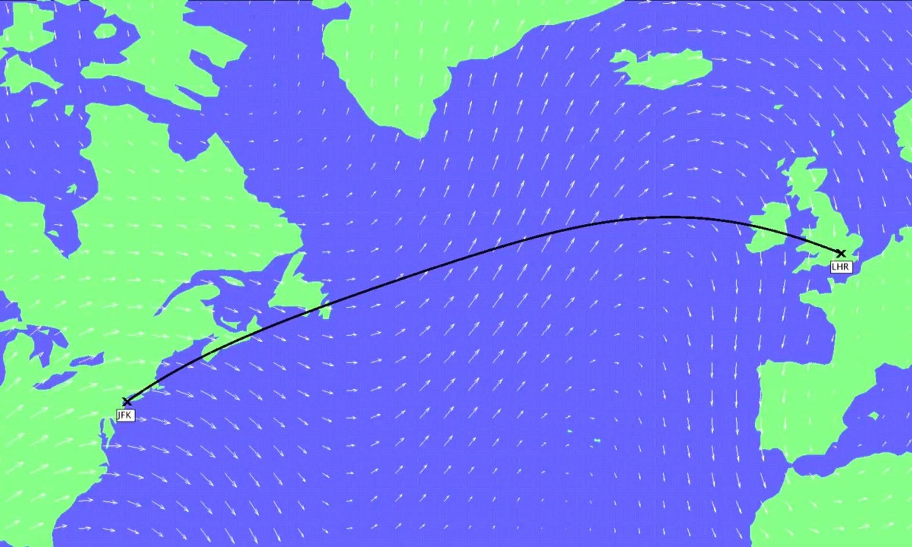
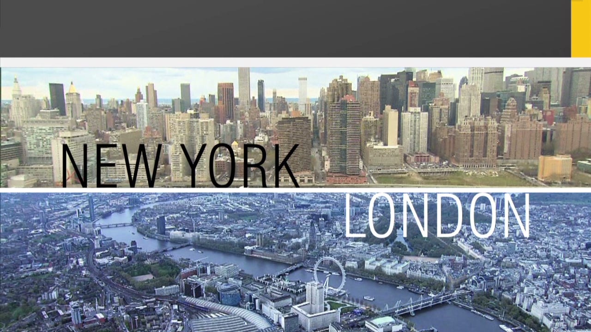

From New York to London
A brief study about the age of airplanes


When you buy your flight ticket to go to london you probably dont care about the age of the aircraft into which you will onboard or you would love to know it but have not mean to get this piece of information.
Today I have spent some time analysing a particular aerial line that is one of the most crowded one because through this line alone travel each year more than three million of passengers. This line Link New York to Londong by the sky.

The main airliner of operating between New york to London are Delta Airlines, British Airways, Virgin Atlantic and American airlines. These three airliners are competing for you to get a seat on one of their airplanes and the hardly competing on price and quality of service but I am expecting that the quality of service tend to be the same from airliner to airliner.
The average price for an one way flight between New york and London is $246 but should this price be the same when the plane that will transport you is 20 years old. My answer to this question is clearly NO but the goal of this article is not to convice you that the price of a flight should be correlated to the age ot the airplane. In this article I am just going to give you some insight about the age of airplane that operate between New York and London. These data about these airplanes flying from these two big city is here
You can see with these data that American Airline is operating the oldest airplanes while virgin operates airplanes aged less than 5 years. The average age of all the aircraft flying this line is …. with a standard deviation of . Aiplanes that are serving this line are on average 14 year old a big number for a such important air link.
Do you think that being in plane that is less than 3 years old matter? I would love to know your answer.
PS: This article is kept short because I have spent lot of effort collecting data and have not enough words to explain it more clearfully. I hope you understand the point that I trying to make and see that this article is related to these ones below